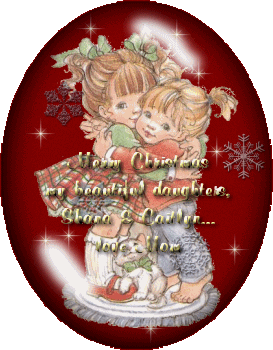
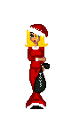
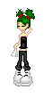
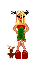
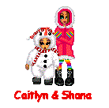
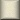

"Thanks Mom!! We love you too!"
My moms friend...
...sent me these Holiday Dollz! :)



"Thanks Speedy!!!!"
Here's a little tree my mom made for The Site Fights December Events...
my little dollz need a little tree! And blue IS my fave color! :)
And here's 1 I made for Caitlyn & I...

Click on a button below to navigate:

background, banner & buttons by my
mom!
|
|